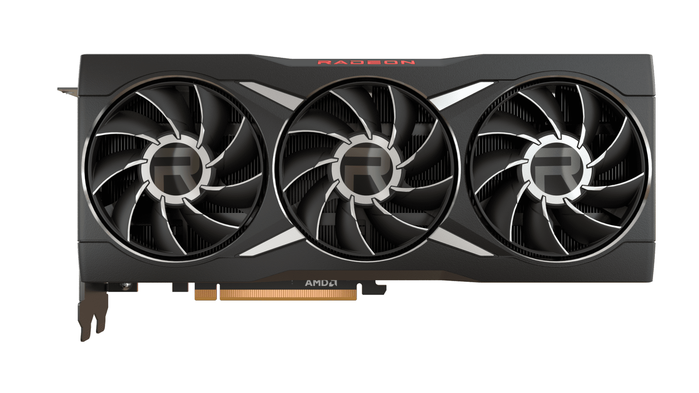
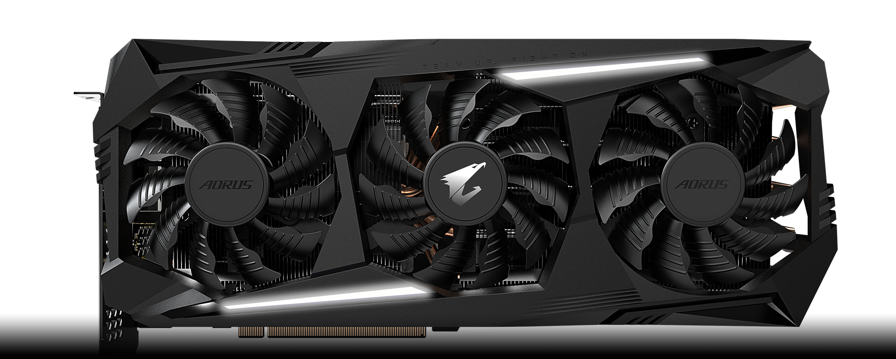
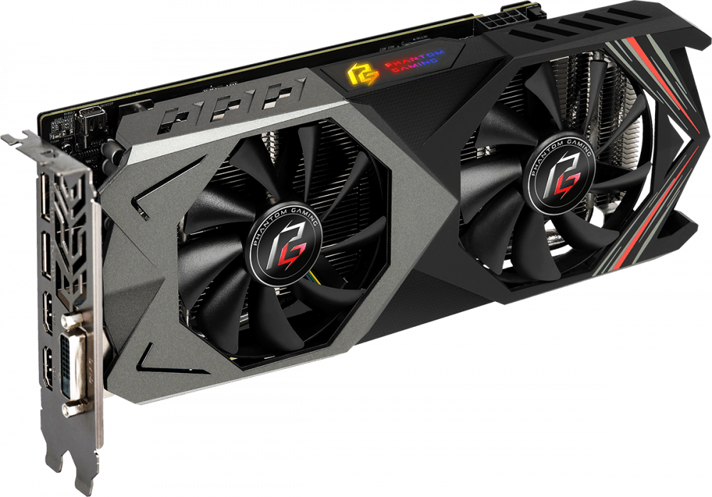

Разработчик графических процессоров AMD
Также существует такой разработчик графических процессоров как AMD он же является прямым конкурентом Nvidia в разработке графических процессоров
AMD (Advanced Micro Devices) — «продвинутые микроустройства») — американский производитель интегральной микросхемной электроники, один из крупнейших производителей центральных процессоров, графических процессоров и адаптеров (после приобретения ATI Technologies в 2006 году), материнских плат и чипсетов для них также твердотельные накопители под торговой маркой Radeon.С 2009 года не имеет собственного микроэлектронного производства и размещает заказы на мощностях других компаний. В роли постоянного партнёра-производственного подрядчика для производства своих чипов использует компании GlobalFoundries, и с 2018 года TSMC.Стратегическими партнёрами AMD на рынке персональных компьютеров и серверов являются такие компании, как HP Inc., Dell, Acer, Fujitsu, Fujitsu Technology Solutions и IBM. В сфере сетевых продуктов — Bay Networks, Cabletron Systems, Cisco. На рынке телекоммуникационных систем — Nokia, AT&T, Ericsson, NEC, Siemens, Sony. Главные конкуренты AMD: Intel (производство процессоров и чипсетов; при этом компании имели несколько совместных проектов) и Nvidia (производство графических процессоров).
Здесь мы также рассмотрим несколько поколений видеокарт AMD
RX6950 XT(RX 6000 Series)

Технические характеристики:
Максимальное разрешение: 7680x4320
Частота видеопроцессора: 1890 МГц
Объем видеопамяти: 16 ГБ
Тип памяти: GDDR6
Разрядность шины памяти: 256 бит
Максимальная пропускная способность памяти: 576 Гбайт/сек
Рекомендуемая мощность блока питания: 850 Вт
Версия DirectX: 12
RX5700 XT(RX 5000 Series)

Технические характеристики:
Максимальное разрешение: 7680x4320
Частота видеопроцессора: 1770 МГц
Объем видеопамяти: 8 ГБ
Тип памяти: GDDR6
Разрядность шины памяти: 256 бит
Максимальная пропускная способность памяти: 448 Гбайт/сек
Рекомендуемая мощность блока питания: 600 Вт
Версия DirectX: 12
RX590(RX 500 Series)

Технические характеристики:
Максимальное разрешение: 7680x4320
Частота видеопроцессора: 1469 МГц
Объем видеопамяти: 8 ГБ
Тип памяти: GDDR5
Разрядность шины памяти: 256 бит
Максимальная пропускная способность памяти: 256 Гбайт/сек
Рекомендуемая мощность блока питания: 500 Вт
Версия DirectX: 12
Официальный сайт AMD на котором вы также можете более подробно ознакомиться с продукцией и установить официальный софт на видеокарты и не только, ведь они делают еще и микропроцессоры:
AMD